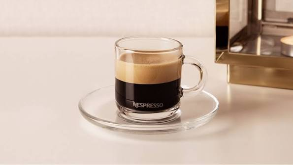
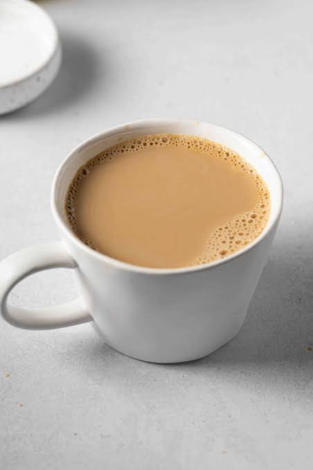

Latte Art Capuchino preparado con leche granito de vaca y una textura cremosa del latte con diseño de crema.
Café Solo Café especial tostado y molido en un momento, aroma intenso y sabor balanceado sin aditivos. 
Café con Leche Bebida reconfortante hecha con una taza de café y leche vaporizada, ideal para un momento tranquilo. 